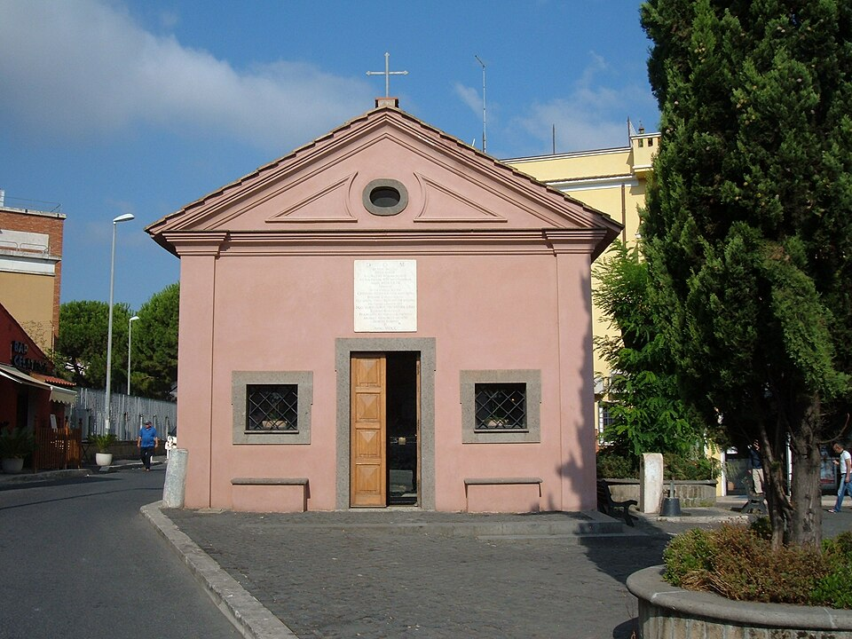
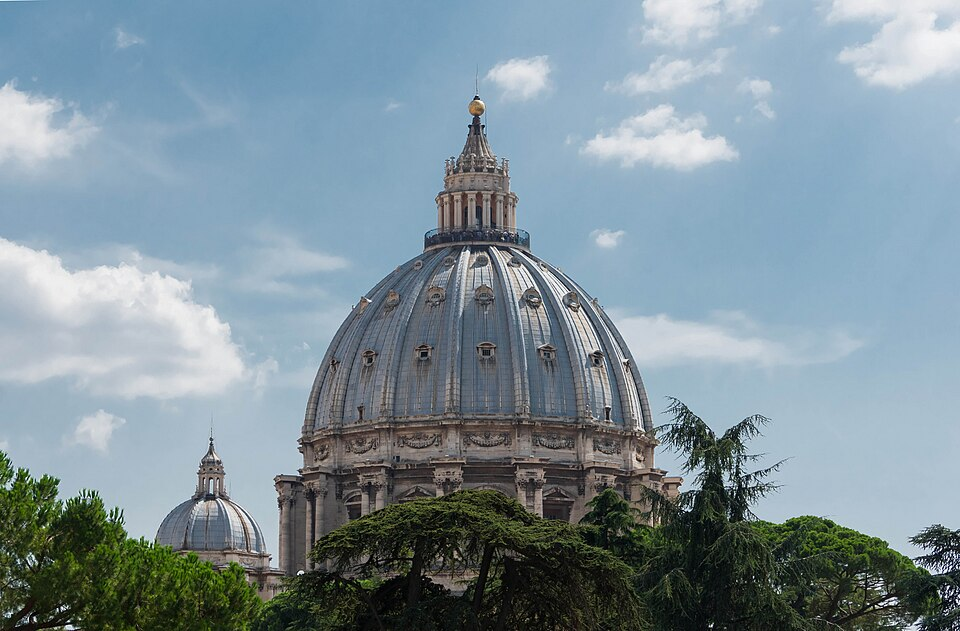
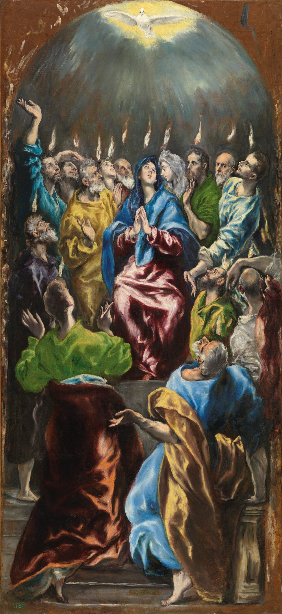

Terreno: campagna boscosa e ondulata attraverso Campagnano e Formello, poi la vecchia linea della Via Cassia per La Storta, e un'ultima salita su Monte Mario — il Mons Gaudii dei pellegrini, il Monte della Gioia — prima della discesa nella Città Leonina e a San Pietro. Attenzione al traffico dell'ultima ora; sei venuto troppo lontano per avere fretta. Distanza e dislivello sono misurati dalla traccia GPS del giorno.8
Oggi arrivi — e arrivando, scopri che la strada non è mai stata un vicolo cieco ma un giro di boa. Un pellegrinaggio non esiste per portarti a Roma. Esiste per rimandarti a casa cambiato. L'ultima virtù è quella che guarda verso la via da cui sei venuto: missione, la disponibilità a essere inviato.
A me è stato dato ogni potere in cielo e sulla terra. Andate dunque e fate discepoli tutti i popoli, battezzandoli nel nome del Padre e del Figlio e dello Spirito Santo, insegnando loro a osservare tutto ciò che vi ho comandato. Ed ecco, io sono con voi tutti i giorni, fino alla fine del mondo.
Matteo 28,18–20 · versione CEI 20081
Il mandato missionario è pronunciato su un monte, e questo dettaglio conta in un mattino in cui la tua ultima salita è il Monte della Gioia. Gli undici hanno camminato fino in Galilea per incontrare il Cristo risorto su un'altura — e tutto il senso della vetta è che non possono restarvi. «Andate», dice. La cima non è una meta ma un punto di vista: la sali per vedere fin dove arriva l'invio — «tutti i popoli» — e poi torni giù e cominci a camminare verso di loro. Ogni arrivo nel Vangelo è immediatamente un mandato. Non c'è vetta, nella vita cristiana, che non sia anche un punto di partenza.
Perciò non lasciare che la gioia di oggi inacidisca in una fine. Entrerai in Piazza San Pietro e qualcosa in te vorrà dire ecco, fatto, finito, a casa. Ma non sei venuto alla tomba di un eroe; sei venuto alla tomba di un uomo che fu egli stesso inviato — un pescatore a cui fu detto di pascere le pecore, un rinnegatore a cui per tre volte fu chiesto di amare, e poi spedito ai confini della terra, per finire qui sotto questa cupola non come un conquistatore ma come un testimone ucciso per l'annuncio. La tomba di Pietro non è un punto fermo. È un punto esclamativo alla fine della parola andate.
E Agostino ti dà il motore per farlo, nelle cinque parole più libere che abbia mai scritto: «Ama, e fa' ciò che vuoi». Non sono una licenza a fare qualsiasi cosa; sono il contrario. Metti a posto la radice — lascia che l'amore autentico sia la cosa piantata più in profondità in te — e tutto ciò che crescerà da quella radice sarà bene, perché un cuore radicato nell'amore non può volere altro. È l'unica missione per cui valga la pena essere inviati. Non hai pedalato cinquecento chilometri per portare Roma a casa come souvenir. Sei venuto perché la radice fosse ripiantata, così che qualunque cosa ora «farai come vuoi» nella terra ordinaria della tua vita germogli dall'amore. È questo l'invio. È questo il Giorno Otto.
Quando domani sarò rimandato giù da questo monte, nella strada ordinaria della mia vita — verso chi, e verso che cosa, sono inviato?
Il percorso finale, da Sutri a San Pietro. Mappa © CyclOSM / OpenStreetMap. Profilo altimetrico completo e tutte le tappe →
Attraverso Campagnano e Formello la campagna boscosa cede gradualmente il posto alle periferie della grande città. Poi la strada si congiunge alla vecchia linea della Via Cassia in un luogo dalla storia silenziosa ed enorme.

Foto: Croberto68 (CC BY-SA 3.0) · Wikimedia Commons
La cupola di San Pietro — la meta in vista. Foto: Jebulon (CC0) · Wikimedia CommonsPoi la discesa nella Città Leonina, il colonnato che apre le sue braccia, e la cupola. Sei arrivato. Non dire nulla di brillante. Sei nel luogo verso cui la strada ha condotto i pellegrini per più di mille anni — sopra la tomba di Pietro, che fu inviato, e non poté restare.
Mentre stava compiendosi il giorno della Pentecoste, si trovavano tutti insieme nello stesso luogo. Venne all'improvviso dal cielo un fragore, quasi un vento che si abbatte impetuoso, e riempì tutta la casa dove stavano. Apparvero loro lingue come di fuoco, che si dividevano, e si posarono su ciascuno di loro, e tutti furono colmati di Spirito Santo e cominciarono a parlare in altre lingue, nel modo in cui lo Spirito dava loro il potere di esprimersi.
Atti degli Apostoli 2,1–4 · versione CEI 20082

Avevano ricevuto il mandato — «Andate» — e poi, significativamente, non andarono. Si radunarono a porte chiuse e aspettarono, perché un comando di essere inviati non è ancora la forza di muoversi. Per settimane i discepoli furono gente con una missione e senza motore. E poi il vento, e il fuoco, e tutto cambiò: gli stessi uomini che avevano sbarrato le porte le spalancarono e si riversarono nella strada, e la prima cosa che lo Spirito fece fu sciogliere le loro lingue perché ogni straniero a Gerusalemme udisse le grandi opere di Dio nella propria lingua. La missione non è i discepoli che decidono di essere coraggiosi. La missione è il soffio stesso di Dio che li spinge fuori dalla porta.
Guarda a che cosa serve il fuoco. Non si posa sul gruppo come un unico caldo bagliore; «si divide», separandosi in fiamme distinte, una su ciascun capo. La Pentecoste personalizza. Ognuno di loro è acceso individualmente e inviato individualmente — perché lo Spirito non vuole una folla, vuole mille testimoni particolari, ciascuno che porta l'unico fuoco in un luogo che solo lui può raggiungere. Tu sei una di quelle lingue di fuoco. La strada da cui sei venuto, le persone che saranno alla tua tavola la prossima settimana, l'angolo di mondo che è tuo e di nessun altro — quella è la lingua che lo Spirito vuole parlare attraverso di te, e nessun altro può parlarla con il tuo accento.
E nota dove va la storia degli Atti. Comincia in questo cenacolo sbarrato a Gerusalemme e finisce — l'intero libro finisce — con il vangelo che raggiunge Roma. La città in cui arrivi oggi è, nella geografia stessa della Bibbia, l'estremità dell'invio, «i confini della terra» a cui la Pentecoste mirava. Hai pedalato, senza saperlo, fino all'ultima pagina degli Atti. E l'ultima pagina degli Atti non è una conclusione; è una porta aperta. Lo Spirito che riempì quella stanza è lo stesso Spirito pronto a riempire te alla fine del viaggio — non per ricompensare l'arrivo, ma per alimentare il ritorno a casa.
…capo del mondo per mezzo della santa Sede del beato Pietro, hai esteso il tuo dominio più con la religione divina che con il potere terreno.
Papa san Leone Magno, Discorso 82,1, nella festa dei santi apostoli Pietro e Paolo4
Sei arrivato nella città che un tempo si credette eterna — ed è giusto che sia un papa romano ad avere qui l'ultima parola per te, perché Leone Magno, predicando in questa città nel quinto secolo, capì esattamente ciò che un pellegrino ha bisogno di capire nel giorno dell'arrivo. Roma, dice al suo popolo, fu grande un tempo: signora delle nazioni, padrona di un impero, le sue aquile su metà del mondo. Ma tutto questo, dice, era la grandezza minore. La città divenne veramente grande solo quando due viandanti vi furono uccisi per amore di Cristo — Pietro e Paolo, sulle cui tombe ora stai — e attraverso la loro testimonianza Roma «estese il suo dominio più con la religione divina che con il potere terreno». L'impero conquistò i corpi. Gli apostoli conquistarono i cuori, e l'impero è polvere mentre l'invio continua.
Sosta su questo, perché ridà senso a tutto ciò che hai fatto. Non hai pedalato fin qui per toccare la grandezza di un impero. Hai pedalato alle tombe di due uomini la cui intera importanza è che furono inviati e andarono. Pietro venne a Roma per morire dicendo la verità; Paolo venne in catene e continuò a predicare da esse. Nessuno dei due arrivò nel senso che le tue gambe implorano stasera — un riposo, un punto fermo, un compito concluso. Arrivarono come arriva un seme nel terreno: come l'inizio di qualcosa che sopravvive a chi arriva. La grandezza di questo luogo non è che la strada finisce qui. È che da qui la strada corse verso il mondo intero — e corre ancora, attraverso di te, stasera.
Ed è questa l'ultima riflessione, e non ti lascerà tenere il pellegrinaggio come un ricordo da mettere su uno scaffale. Roma non è la conclusione del tuo viaggio. Roma è il cardine. Otto giorni fa la strada ti chiamò fuori dalla tua vita ordinaria; stasera, alla tomba degli Apostoli, ti fa voltare e ti rimanda in essa — non la stessa persona che è partita, ma una che ha imparato l'obbedienza il primo giorno e la missione l'ultimo, e la speranza e l'umiltà e la gratitudine nel mezzo. Leone te lo direbbe con chiarezza: la religione di Dio ha un «dominio più esteso» di qualsiasi governo, e avanza non con eserciti ma con persone ordinarie rimandate a casa cambiate. Va', dunque. Ora sei uno di loro.
Una benedizione per la strada di casa
Ogni citazione è riportata dall'edizione indicata; le affermazioni storiche derivano dai riferimenti qui sotto. Le citazioni dei Padri sono rese in italiano per questo breviario a partire dalle edizioni critiche indicate.